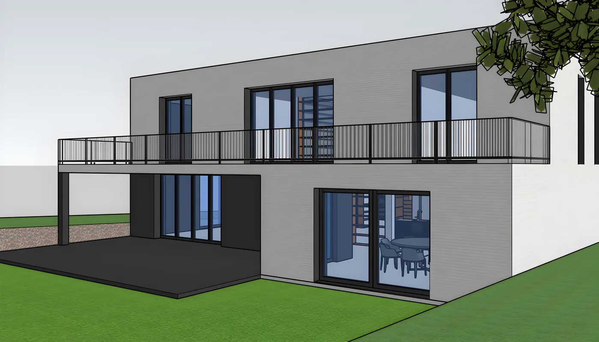
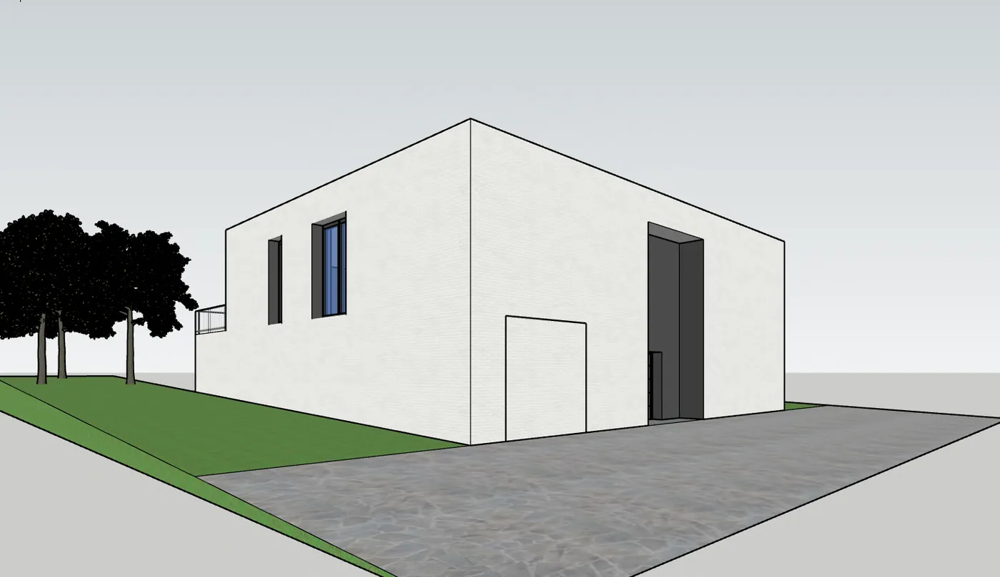
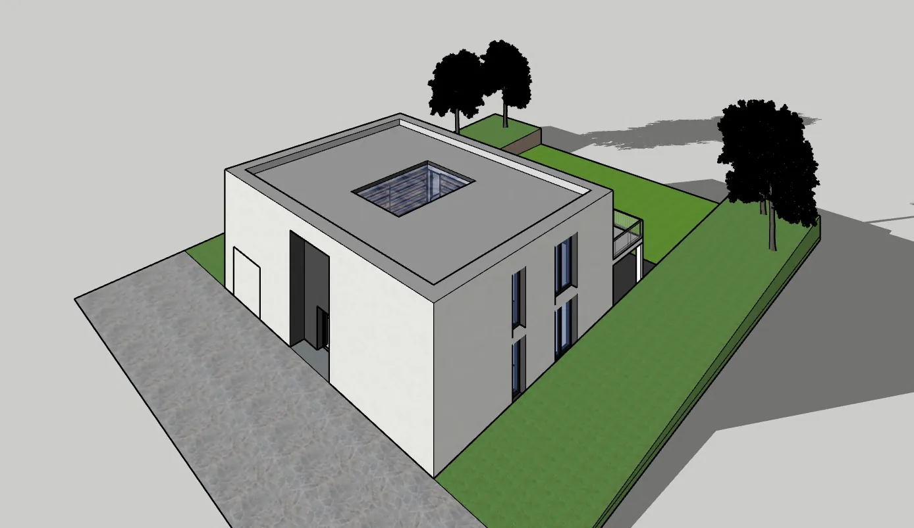
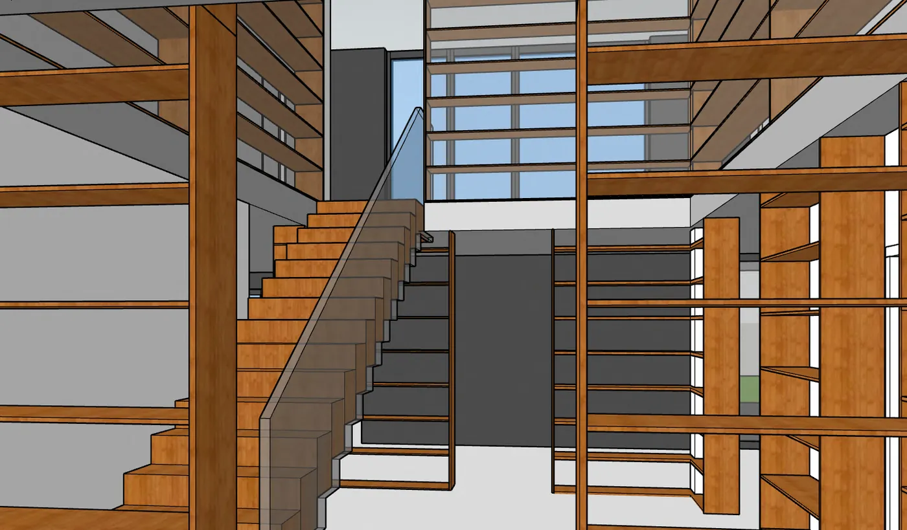
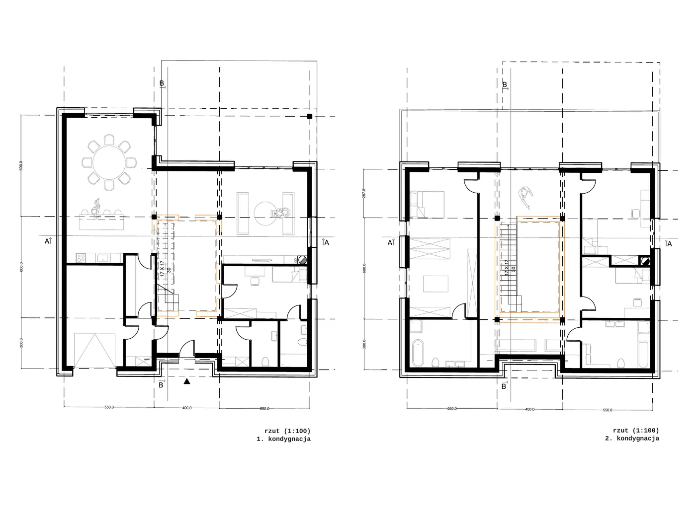
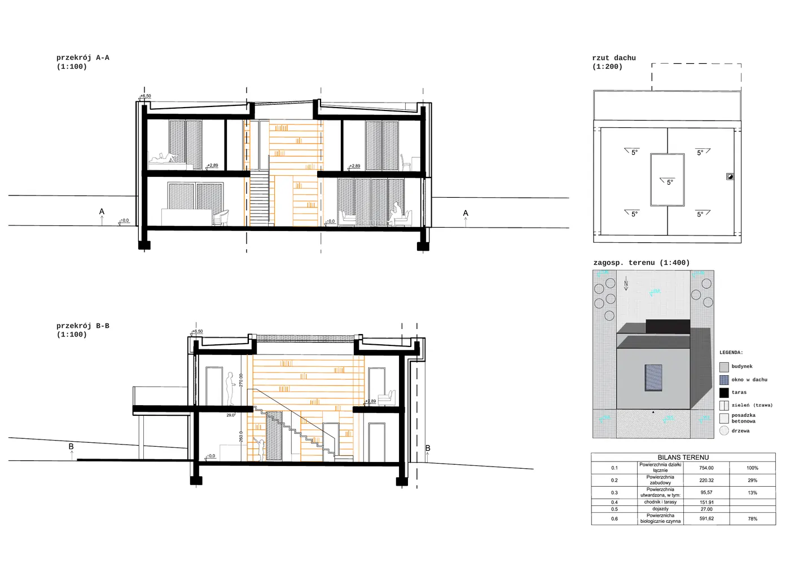
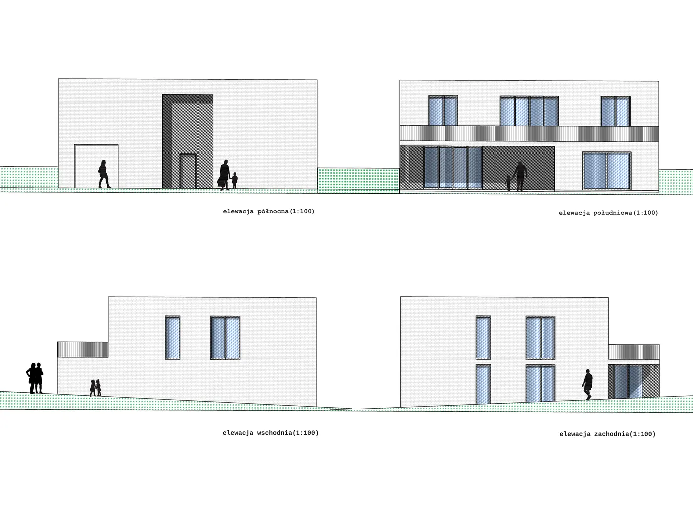
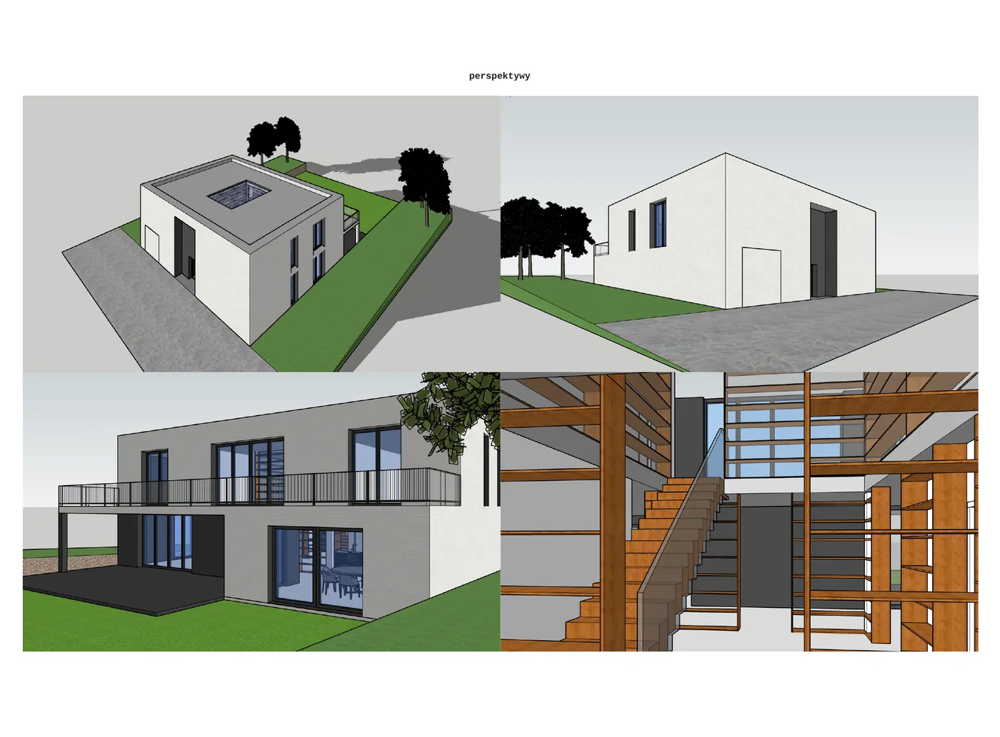

12/ 15
Mieszkalnictwo · Dom jednorodzinny · 2023
Dom jednorodzinny z biblioteką
Prosta, biała bryła, w której sercu znajduje się dwukondygnacyjna biblioteka.

Dom jednorodzinny zaprojektowany wokół biblioteki — przestrzeni otwartej na dwie kondygnacje i splecionej z klatką schodową. Prosta, biała bryła z płaskim dachem otwiera się tarasem na ogród.



—
Plansze
Plansze projektowe w pełnej rozdzielczości — kliknij, aby powiększyć.







